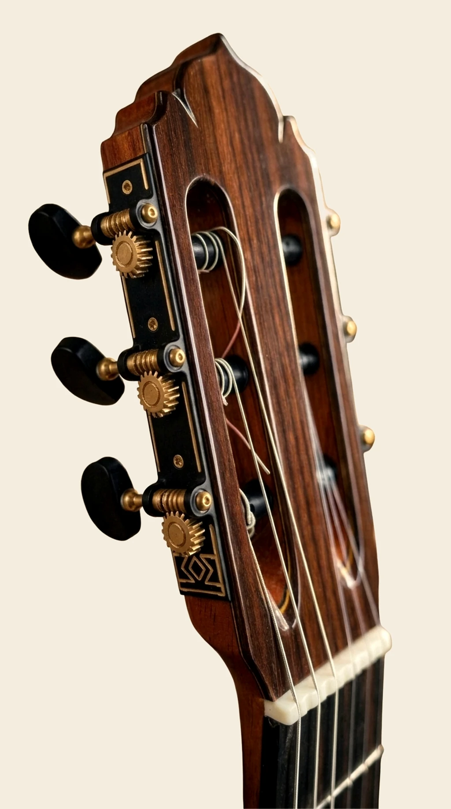

El taller
Construcción artesanal, método tradicional español
Desde el primer corte de madera hasta la última capa de goma laca, cada guitarra pasa por las manos del lutier en todas y cada una de sus fases. Sin producción en serie, sin atajos.

Fase 01
El mango
El mango es la parte de la guitarra que conversa con la mano del intérprete. Su tallado, la elección de la madera y el ajuste del diapasón determinan la comodidad y la musicalidad del instrumento.
Cada mango se talla a mano y se ajusta progresivamente hasta conseguir el perfil, la altura de cuerdas y el tacto que pedimos para cada modelo y para cada guitarrista.
El mango, paso a paso


Tapa y fondo
La selección de la tapa y el fondo es decisiva: de su veta, grosor y densidad dependen el volumen, la proyección y el color del sonido. Las tablas se unen, se cepillan y se ajustan una a una.


Domado de aros
Los aros se conforman al calor y se encajan sobre la plantilla hasta reproducir con exactitud la forma del cuerpo. De este trabajo depende la correcta unión de tapa y fondo.


Montaje
Mástil, puente, clavijero, diapasón y cuerdas. El momento en el que todas las piezas se encuentran y la guitarra empieza a existir como instrumento.


Barnizado a goma laca
El acabado tradicional a goma laca, aplicado a muñeca capa a capa, deja respirar la madera y aporta un brillo cálido y profundo que ningún barniz industrial puede imitar.


Quieres ver el proceso en persona
Estamos en La Torre de Esteban Hambrán (Toledo). Escríbenos y concertamos una visita al taller.